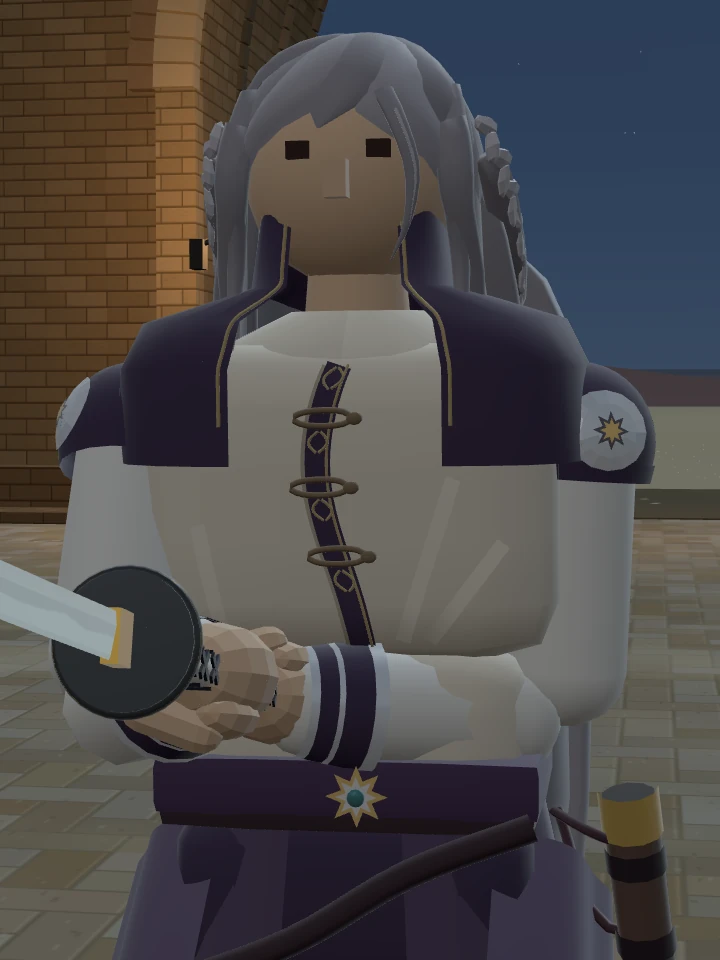
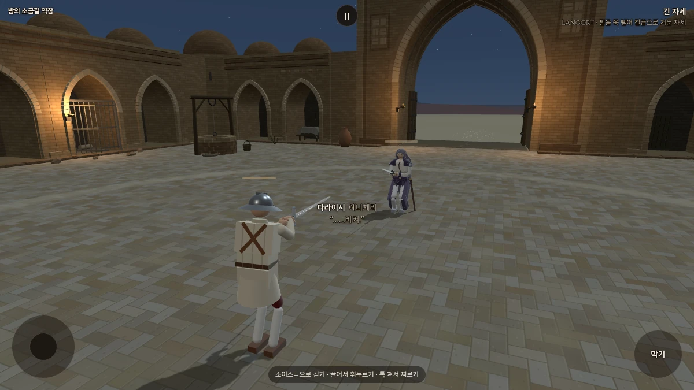
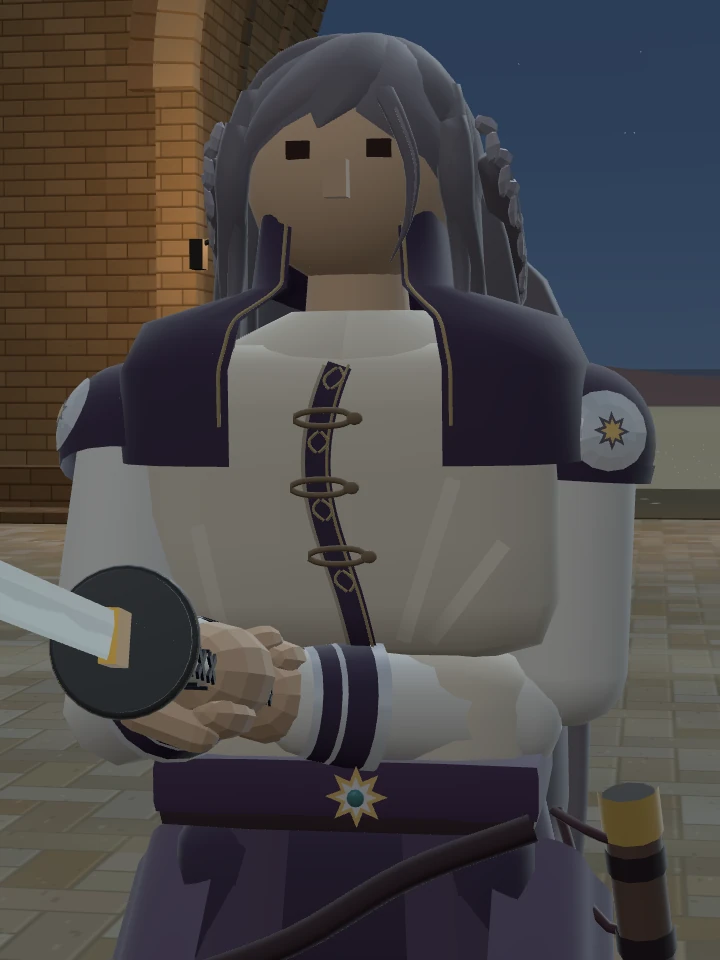

1 · 진주빛 은회색


원래 색과 가장 가깝게, 조금 더 밝고 부드럽게.
1번으로 대련하기STILLNESS · 적막
목과 옷깃 사이의 빈틈을 메웠습니다.
현재 머리색은 원래 은회색이며, 아래 세 가지는 비교용 시안입니다.

머리 모양은 그대로 두고, 원래 은회색과 가까운 색으로만 변주했습니다.
같은 밤 조명·카메라·축척으로 촬영했습니다. 세 시안 모두 목 연결부 수정이 적용되어 있습니다.
비어 있던 목과 셔츠 윗부분을 연결해 뒤쪽 머리카락이 비치던 틈을 막았습니다.

